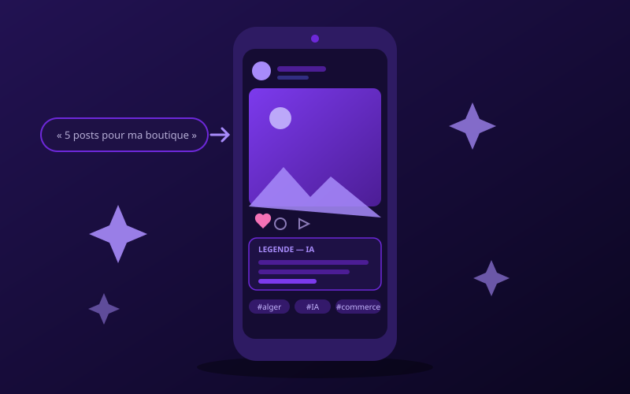

📸 الذكاء الاصطناعي لمهنتك · نُشر في 17 جويلية 2026
الذكاء الاصطناعي لإنستغرام: التعليقات والصور والهاشتاغات

إنستغرام هو أفضل قناة مجانية لمحل تجاري في الجزائر — وأكثرها استهلاكاً للوقت. الوقوف عاجزاً أمام خانة «التعليق» قتل حسابات أكثر مما فعلت الخوارزمية. الذكاء الاصطناعي لن يدير صفحتك مكانك: سيكتب المسوّدات، ويعيد لك سهراتك.
القاعدة التي يجب أن تحكم كل شيء
الذكاء الاصطناعي يكتب المسوّدة. وأنت تحتفظ بصوتك.
التعليق المولّد 100% يُكتشف فوراً: أسلوب أملس، مفردات كتيّب إشهاري، بلا روح. زبائنك يتابعون شخصاً، لا بياناً رسمياً. خذ نص الذكاء الاصطناعي، احذف جملة، وأضف تفصيلاً تعرفه أنت وحدك — اسم زبونة وفية، أو حال الطقس في الجزائر هذا الصباح. هذا التفصيل هو ما يصنع العلاقة.
1. التعليقات (المكسب الحقيقي في الوقت)
التعليق الجيد يتبع بنية بسيطة: جملة جذب ← قيمة ← دعوة للتفاعل. أعطِها للذكاء الاصطناعي:
«أنت مسؤول تواصل. اكتب تعليق إنستغرام لمحل ملابس أطفال في الجزائر العاصمة. المنتج: تشكيلة الدخول المدرسي. البنية: جملة جذب مثيرة في سطر واحد، جملتان للقيمة، ودعوة للتفاعل. أسلوب ودود ومباشر، إيموجيان كحدّ أقصى، دون كلام فارغ.»
ثم حسّن بالحوار: «اختصر»، «ابدأ بسؤال»، «أعطني 3 جمل جذب أخرى». النسخة الأولى ليست الجيدة أبداً — وهذا طبيعي.
💡 أنجع برومبت: «هذه 3 تعليقات كتبتها ونجحت: [الصقها]. اكتب 5 تعليقات جديدة بنفس الأسلوب تماماً.» الذكاء الاصطناعي يقلّد أسلوبك أفضل بكثير مما يخمّنه.
2. الصور
طريقتان، حسب حاجتك:
- صورك الحقيقية + Canva — الخيار الأفضل لمحل تجاري. منتجاتك الحقيقية، بإخراج نظيف. الأصالة تبيع أكثر من صورة اصطناعية.
- صور مولّدة — مفيدة لمنشورات الأجواء، الاقتباسات، والخلفيات. طالع دليلنا إنشاء الصور بالذكاء الاصطناعي مجاناً.
⚠️ تذكير مهم: لا تولّد صورة منتج لا تبيعه فعلاً. الزبون الذي يستلم شيئاً مختلفاً عمّا رآه لا يعود أبداً — ويخبر غيره.
الصيغة: إنستغرام يفضّل العمودي (4:5 للمنشورات، 9:16 للريلز). حدّد ذلك للذكاء الاصطناعي أو في Canva.
3. الهاشتاغات: الحقيقة المزعجة
لا، 30 هاشتاغاً عاماً لن يجلب لك شيئاً. `#love #instagood #follow4follow` تغرقك في محيط من ملايين المنشورات، أمام حسابات تزن ألف ضعف حسابك.
ما ينجح: قليل، ومستهدف. من 5 إلى 10 هاشتاغات دقيقة، حيث لديك فرصة حقيقية لتُرى:
- محلية — `#الجزائر_العاصمة` `#وهران` `#باب_الزوار`: أفضل ورقة لديك، المنافسة فيها ضعيفة.
- متخصّصة — `#ملابس_اطفال_الجزائر` بدل `#موضة`.
- مجتمعية — تلك التي يستعملها زبائنك فعلاً.
«اقترح 10 هاشتاغات لمحل ملابس أطفال في الجزائر العاصمة. امزج: 4 محلية، 4 متخصّصة، 2 مجتمعية. تجنّب الهاشتاغات العامة ذات ملايين المنشورات.»
ثم تحقّق منها يدوياً في إنستغرام: الذكاء الاصطناعي لا يعرف الأحجام الحقيقية وقد يخترع هاشتاغات ميتة. اكتب كل واحد في البحث وانظر عدد المنشورات.
4. رزنامة المحتوى (نهاية الجفاف)
القاتل الحقيقي للحسابات هو عدم الانتظام. برومبت واحد يحلّ المشكل لشهر كامل:
«اقترح 20 فكرة منشور لـ[نشاطك] على مدى شهر. نوّع الصيغ: نصائح، كواليس، منتج، قبل/بعد، سؤال للمتابعين، شهادة زبون، خطأ شائع. لكل فكرة: الصيغة (صورة/كاروسيل/ريلز) وجملة جذب.»
تحصل على شهر من المحتوى في 30 ثانية. احتفظ بأفضل 12، وارمِ الباقي.
5. الردّ على التعليقات والرسائل
الذكاء الاصطناعي يساعد في صياغة الردود الحسّاسة:
- «زبون يشتكي علناً من [المشكلة]. اكتب رداً قصيراً يعترف بالمشكل ويقترح المتابعة في رسالة خاصة. أسلوب هادئ، غير دفاعي.»
- «اكتب 5 ردود جاهزة على الأسئلة الأكثر تكراراً: السعر، التوصيل، التوفّر، المقاسات، الدفع.»
⚠️ لكن ردّ بنفسك على التبادلات الحقيقية. الزبون الذي يشعر بالآلية ينصرف.
ما يجب ألّا تفعله أبداً
- شراء المتابعين أو التفاعل. تدفع مقابل حسابات فارغة: نسبة تفاعلك تنهار، والخوارزمية تدفنك، وصفحتك تفقد كل مصداقية. إنه أفضل طريقة لقتل حساب سليم.
- روبوتات الأتمتة (إعجابات ومتابعات بالجملة، رسائل خاصة آلية). هذا يخالف شروط استعمال إنستغرام وقد يؤدي إلى تعليق حسابك. تخاطر بخسارة سنوات من العمل.
- النشر دون مراجعة. الذكاء الاصطناعي يخطئ: قد يخترع سعراً أو تاريخاً أو خاصية منتج. أنت المسؤول عمّا يُنشر باسمك.
- نسخ حساب منافس. الذكاء الاصطناعي قد يساعدك على تحليل ما ينجح عنده — لا على سرقته.
حالة عملية: 30 دقيقة، أسبوع من المحتوى
- ولّد 20 فكرة للشهر (البرومبت أعلاه). احتفظ بـ12.
- صوّر منتجاتك في جلسة واحدة، بضوء النهار قرب نافذة. مجاني، ويتفوّق على أي صورة مولّدة.
- أخرِج في Canva — قالب واحد، مكرّر 12 مرة.
- ولّد الـ12 تعليقاً دفعة واحدة، مع إعطاء تعليقاتك القديمة كمثال على الأسلوب.
- راجع وخصّص كل واحد: هذه الخطوة لا يتخطّاها أحد دون أن يدفع الثمن.
- برمج النشر عبر المخطّط المجاني في Meta Business Suite.
نصف ساعة يوم الأحد، وأسبوعك جاهز.
السؤال الذي تطرحه قبل النشر
«هل كنت سأتوقف عند هذا المنشور لو رأيته في صفحتي؟»
إن كان الجواب لا، فالذكاء الاصطناعي لن يغيّر شيئاً. المنشور الجيد يأتي من فكرة جيدة — والذكاء الاصطناعي يكتفي بإلباسها أسرع.
وماذا بعد؟
للمزيد: 7 استخدامات عملية للذكاء الاصطناعي في محل صغير، 30 برومبت جاهز للنسخ، إنشاء الصور بالذكاء الاصطناعي، أو مقارنة أدوات الذكاء الاصطناعي المجانية.